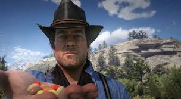

Meu nome é Arthur Morgan, e minha vida foi marcada pela luta constante entre o que sou e o que espero que eu volte. Nasci em algum momento de 1863, sob o céu aberto do Velho Oeste, mas a maior parte da minha vida foi moldada pela vida na estrada, longe dos laços comuns e das leis que experimentam.
